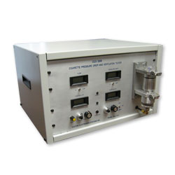

Pressure Drop and Ventilation Tester (CES 508)
Features:
- Measures pressure drop across a porous test sample. Initially designed for cigarettes but adaptable to any porous material.
- Accurately maintains and measures user settable air flow from 0-100.0 ml/s
- Automatic pressure drop compensation (i.e. accounts for absolute pressure variations in the environment and test equipment)
- Accurately measures flow ± .75% ± LCD
- Accurately measures ventilation (0-100 %)
- Auto-zero for flow, ventilation, and pressure drop.
Description:
This instrument was designed and manufactured to meet your company's need to accurately and repeatably measure total flow and ventilation flow through a test sample cigarette in a temperature controlled environment.
Two of the key innovations in the CES 508 is its ability to automatically compensate for absolute pressure variations and performs an auto-zero before every test.